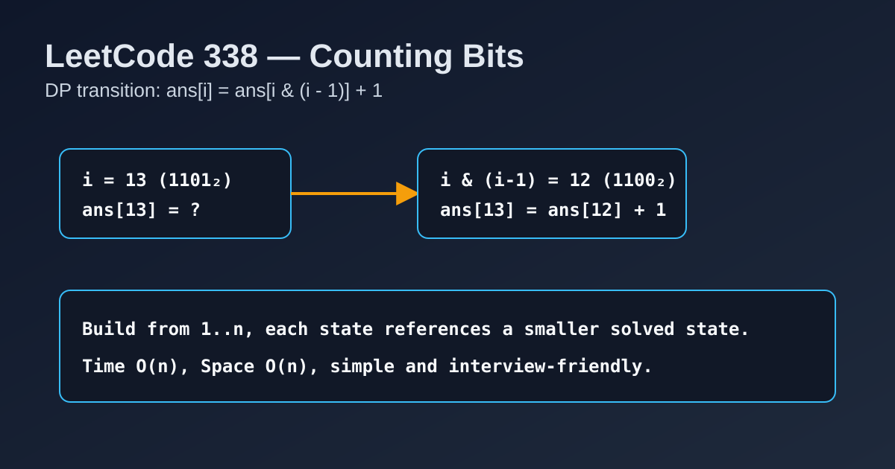

LeetCode 338: Counting Bits (DP from Lowest Set-Bit Transition)
LeetCode 338Dynamic ProgrammingBit ManipulationToday we solve LeetCode 338 - Counting Bits.
Source: https://leetcode.com/problems/counting-bits/

English
Problem Summary
Given an integer n, return an array ans of length n + 1 where ans[i] is the number of 1-bits in the binary representation of i.
Key Insight
For any positive integer i, removing its lowest set bit gives i & (i - 1). So:
ans[i] = ans[i & (i - 1)] + 1
This makes a clean DP because i & (i - 1) < i, meaning the smaller state is already computed.
Algorithm
1) Initialize ans[0] = 0.
2) For i from 1 to n, compute ans[i] = ans[i & (i - 1)] + 1.
3) Return ans.
Complexity
Time: O(n).
Space: O(n) for output array.
Reference Implementations (Java / Go / C++ / Python / JavaScript)
class Solution {
public int[] countBits(int n) {
int[] ans = new int[n + 1];
for (int i = 1; i <= n; i++) {
ans[i] = ans[i & (i - 1)] + 1;
}
return ans;
}
}func countBits(n int) []int {
ans := make([]int, n+1)
for i := 1; i <= n; i++ {
ans[i] = ans[i&(i-1)] + 1
}
return ans
}class Solution {
public:
vector<int> countBits(int n) {
vector<int> ans(n + 1, 0);
for (int i = 1; i <= n; ++i) {
ans[i] = ans[i & (i - 1)] + 1;
}
return ans;
}
};class Solution:
def countBits(self, n: int) -> list[int]:
ans = [0] * (n + 1)
for i in range(1, n + 1):
ans[i] = ans[i & (i - 1)] + 1
return ans/**
* @param {number} n
* @return {number[]}
*/
var countBits = function(n) {
const ans = new Array(n + 1).fill(0);
for (let i = 1; i <= n; i++) {
ans[i] = ans[i & (i - 1)] + 1;
}
return ans;
};中文
题目概述
给定整数 n，返回长度为 n + 1 的数组 ans，其中 ans[i] 表示数字 i 的二进制表示中 1 的个数。
核心思路
对任意正整数 i，表达式 i & (i - 1) 会去掉最低位的一个 1。因此有状态转移：
ans[i] = ans[i & (i - 1)] + 1
因为 i & (i - 1) < i，所以它对应的答案一定已经在前面算过，天然满足动态规划顺序。
算法步骤
1）初始化 ans[0] = 0。
2）从 1 到 n 遍历，按 ans[i] = ans[i & (i - 1)] + 1 填表。
3）返回 ans。
复杂度分析
时间复杂度：O(n)。
空间复杂度：O(n)（结果数组）。
多语言参考实现（Java / Go / C++ / Python / JavaScript）
class Solution {
public int[] countBits(int n) {
int[] ans = new int[n + 1];
for (int i = 1; i <= n; i++) {
ans[i] = ans[i & (i - 1)] + 1;
}
return ans;
}
}func countBits(n int) []int {
ans := make([]int, n+1)
for i := 1; i <= n; i++ {
ans[i] = ans[i&(i-1)] + 1
}
return ans
}class Solution {
public:
vector<int> countBits(int n) {
vector<int> ans(n + 1, 0);
for (int i = 1; i <= n; ++i) {
ans[i] = ans[i & (i - 1)] + 1;
}
return ans;
}
};class Solution:
def countBits(self, n: int) -> list[int]:
ans = [0] * (n + 1)
for i in range(1, n + 1):
ans[i] = ans[i & (i - 1)] + 1
return ans/**
* @param {number} n
* @return {number[]}
*/
var countBits = function(n) {
const ans = new Array(n + 1).fill(0);
for (let i = 1; i <= n; i++) {
ans[i] = ans[i & (i - 1)] + 1;
}
return ans;
};
Comments